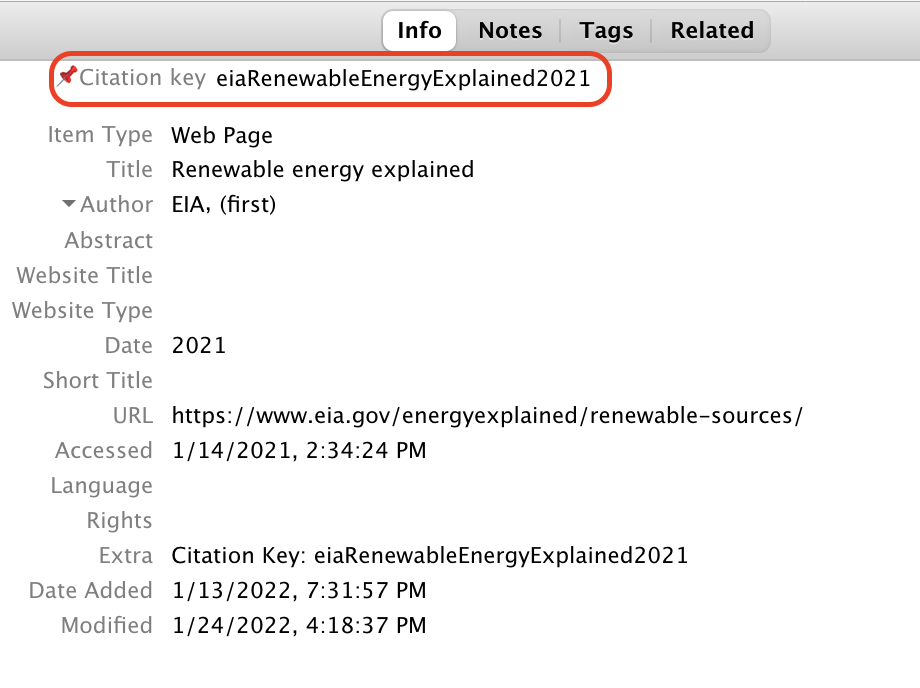
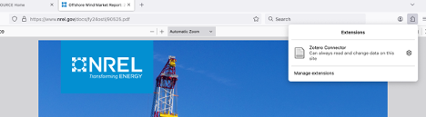

Developer Resources
Coding Standards and Conventions
The following naming, rounding, and coding conventions apply to all new code contributed to ReEDS. Because these conventions were established after initial development, you may notice inconsistencies in the existing codebase–that’s expected. The goal is consistency going forward, not comprehensiveness.
Using the Ruff Python linter is recommended to improve code quality. To get started with Ruff, see the guide on Installing Ruff. Once installed, you can check for errors using the following command from the base ReEDS-2.0 directory: ruff check. If you need more information on a specific error, see the Ruff Rules.
Since we have not yet adopted strict formatting guidelines, do not make code formatting changes to existing scripts using Ruff; use only the linter.
Naming, Rounding, and Coding Conventions
Naming Conventions
Note: this section applies to the GAMS code, not Python. For Python, it’s recommended to follow the Pep 8 - Style Guide.
Category |
Conventions |
Examples |
|---|---|---|
Folders |
lowercase |
|
Files |
typically lowercase with underscores (acronyms often left as uppercase); output files noun first |
|
GAMS Files |
letter-underscore prefix by category, alpha-ordered; numbering can help communicate ordering when multiple files share a category |
|
Parameters |
lowercase with underscores, noun first; costs prefixed with “cost” |
|
Variables |
all caps, noun first |
|
Equations (model constraints) |
prefixed with |
|
Switches |
|
|
Indices/Sets |
lowercase, short (1-2 letters) |
|
Aliases |
repeated letter for single-letter sets |
|
Subsets |
lowercase, short but descriptive |
|
Crosswalk Sets |
set names separated by underscores |
|
Names should be descriptive but concise. The preference is for curt_marg over cm or curtailment_marginal. When unsure, default to more descriptive..
Rounding Conventions
Monetary values (e.g., costs, prices) should be rounded to two decimal places. Other parameters stored in plain text (e.g., csv files) should be rounded to no more than 3 significant figures.
Some exceptions to this might exist due to number scaling (e.g., emission rates).
Coding Conventions
We don’t enforce a strict line length limit in GAMS, but try to limit new code to ≤100 characters per line
Declarations
Blocks of declarations are preferred to individual line declarations
Comments are required for each declaration
Units should always be defined first (even if they are unitless) enclosed in “–”
Example: cap_out(i,r,t) “–MW– capacity by region”
Comments need not be comprehensive when set definitions make the description obvious
CAP(i,v,r,t) “–MW– capacity by technology i of vintage v in region r in year t”
CAP(i,v,r,t) “–MW– capacity by technology”
Ordering of indices
The following indices should always appear first in the following order: (1)ortype (2)i (3)v (4)r (5)h
The t (year) index should always be last
Other sets should generally be ordered alphabetically, respecting the two conventions above
Qualifiers
Enclosed with brackets “[]”
No space between qualifiers
example: \([qual1\)qual2]
Parenthesis should be used to make order of operations explicit
Incorrect: \([not qual1 \)not qual2]
Correct: \([(not qual1)\)(not qual2)]
Operators “and”, “not”, and “or” should be lower case
Equations (this applies to pre- and post-processing; model constraints)
Each term should begin with a plus (+) or minus (-) sign, even the first term
Summations
Summation arguments should be bookended with braces “{}” sum{…}
The summation will generally be separated into three parts that will appear on three different lines, with the closing } lining up with the opening {
[+/-] sum{ ([indices]) $ [qualifiers] , [parameter] * [variable] }+ sum{(i,c,r,t)$[Qual1$Qual2 … $Qual3], cv_avg(i,r,t) * CAP(i,c,r,t) }For equations, sums should generally be split with terms on multiple lines. In some cases it will be more readable to leave the sum on one line (e.g., a short sum inside of a long sum).
Each term of an equation should be separated by a new line; white space should be inserted between terms
When reasonable, only one parameter should be multiplied by one variable
for example, “heatrate [MBtu/MWh] emissions rate of fuel [tons CO2/MBtu] GENERATION [MWh]” should be “emissions rate of plant [tons CO2/MWh] * GENERATION [MWh]”
this will help us limit numerical issues that result from the multiplication of two small numbers
When multiplying parameters and variables, parameters should appear on the left and variables on the right
Keep one space on either end of a mathematical operator (, /, +, -). example: “curt_marg * GEN” rather than “curt_margGEN”
Do not use recursive calculations; new parameters should be created
Example: “load = load 1.053” should be written as “busbarload = enduseload 1.053”
This will create consistency between the units specified in the parameter declaration and the use of the parameter
Comments
Do not use inline comments (comments preceded by //). This helps to make it easier to find comments
Do not use \(ontext/\)offtext except for headers at the beginning of files
Include a space after the “*” to start a comment
Do not use a comment to note an issue. Use the Issues feature in GitHub to document and suggest revisions, instead.
Example: Don’t do this:
*!!!! this will need to be updated to the tophrs designation after the 8760 cv/curt method is implemented
Other
GAMS functions such as sum, max, smax, etc. should use {}; Example: avg_outage(i) = sum{h,hours(h)*outage(i,h)} / 8760 ;
When including the semicolon on the end of a line there should be a space between the semicolon and the last character of the line (see previous example)
When using
/ /for a parameter declaration, place the closing semicolon on the same line as the final slash:/ ;Sums outside of equations (e.g., in e_reports) need not be split over multiple lines if they do not exceed the line limit
Do not use hard-coded numbers in equations or calculations. Values should be assigned to an appropriate parameter name that is subsequently used in the code.
Large input data tables should be loaded from individual data files for each table, preferably in *.csv format. Large data tables should not be manually written into the code but can be written dynamically by scripts or inserted with a $include statement.
Compile-time conditionals should always use a tag (period + tag name) to clearly define the relationships between compile-time conditional statements. Failure to do so hurts readability sometimes leads to compilation errors. Example:
$ifthen.switch1 Sw_One==A Do Something $elseif.switch1 Sw_One==B Do Something $else.switch1 Sw_One==C Do Something $endif.switch1
Input Conventions and Data Handling
Input Conventions
Where reasonable, data read into b_inputs should already be filtered to just the data needed by the model.
The same applies to scenarios. If there are multiple scenario options in a single file (e.g.
inputs/emission_constraints/co2_cap.csv), only the single scenario used in a model run should be copied to inputs_case and loaded in b_inputs.gms.
Input csv files that are written to inputs_case should have the same name as the GAMS parameter that reads that csv file.
Example: trancap_init(r,rr,trtype) reads in trancap_init.csv
Parameters read into b_inputs should also include a header that has the set names and then units for the values. An asterisk is required to keep GAMS from reading the header and throwing an error.
Parameters read into b_inputs should be surrounded by \(offlisting and \)onlisting so that they are not written to the .lst files.
Example:
parameter ev_static_demand(r,allh,allt) "--MW-- static electricity load from EV charging by timeslice" / $offlisting $ondelim $include inputs_case%ds%ev_static_demand.csv $offdelim $onlisting / ;
When a file read into b_inputs was created by an upstream script within the repository, include a note indicating which script created the file.
Example: “* Written by writecapdat.py”
In general, parameter declarations (which are in long format) are preferred to table declarations. Table declarations are acceptable when the table format can significantly reduce the files size or when the format of the native data better matches the table format.
Files used as inputs for the repository are always placed in an appropriate location within the “inputs” folder. Input files are grouped topically.
When there are multiple input options for a given input, the input file name should be “{file}_{option}”. For example:
battery_ATB_2024_moderate
battery_ATB_2024_conservative
If preprocessing is needed to create an input file that is placed in the ReEDS repository, the preprocessing scripts or workbooks should be included in the ReEDS_Input_Processing repository. Data from external sources should be downloaded programmatically when possible.
Any scripts that preprocess data after a ReEDS run is started should be placed in the input_processing folder.
Input processing scripts should start with a block of descriptive comments describing the purpose and methodology, and internal functions should use docstrings and liberal comments on functionality and assumptions.
Any costs read into b_inputs should already be in 2004$. Cost adjustments in preprocessing scripts should rely on the deflator.csv file rather than have hard-coded conversions.
In general, if inputs require calculations before they are ingested into b_inputs, those calculations should be done in Python rather than in GAMS. GAMS can be used for calculations where the GAMS syntax simplifies the calculation or where upstream dependencies make it challenging for the calculations to happen in Python preprocessing scripts.
In Python, file paths should be added using os.path.join() rather than writing out the filepath with slashes.
Data column headers should use the ReEDS set names when practical.
Example: data that include regions should use “r” for the column name rather than “ba”, “reeds_ba”, or “region”.
Preprocessing scripts in input_processing should not change the working directory or use relative filepaths; absolute filepaths should be used wherever possible.
When feasible, inputs used in the objective function (c_supplyobjective.gms) should be included in tests/objective_function_params.yaml. Inputs included in this .yaml file will be checked for missing values using input_processing/check_inputs.py.
Input Data
In general, all inputs less than ~10 MB should be in .csv format.
If the csv file would be larger than ~10 MB, then write it as a h5 file unless accessibility is especially important (e.g., the ReEDS_generator_database file needs to be easily accessible, so is kept as a csv file).
In some cases .txt files may be used as inputs if their format is especially convenient for the application.
Input files should be included in the repository when possible.
Files too large to include in the repository or unnecessary for the repository (e.g., files used only for special circumstances, such as individual sites for wind and solar) should be uploaded to Zenodo and can be copied to the local repository in the preprocessing steps.
Note: files should only be added to Zenodo if they are of interest to users outside of ReEDS, well documented, and unlikely to change frequently.
Add units to raw data files
When adding a new raw data file, include units in the column name to avoid confusion
As an example, look at ‘/inputs/plant_characteristics/csp_ATB_2024_moderate.csv’
The data in the “capcost” column are in unit of k\(/MW or \)/kW, although the units are not labeled
As a best practice, “capcost” should be named “capcost_usd.per.kw” to make units clear
Add comments to raw data files that represent GAMS subsets
When adding a new raw data file that represents a GAMS subset, include column headers representing the GAMS set that each column’s entries belong to, with the first column header being prepended by an asterisk (this allows GAMS to parse the first row of the .csv file as a comment)
For an example, see ‘/inputs/sets/fuel2tech.csv’
File Size and Storage Guidelines
The goal is to keep ReEDS as lightweight as possible to facilitate faster cloning and better version control performance. The following guidelines help maintain repo efficiency while accommodating necessary data files.
General File Size Limits:
< 1 MB: Include directly in the repository for plaintext files
1-10 MB: Include in repository for essential files
10-50 MB: Generally avoid including in repository; use alternative storage solutions
> 50 MB: Never include directly in repository; must use alternative storage
Storage Solution Guidelines:
Zenodo (recommended for large, stable files):
Use for files larger than 10 MB that are long-lived and of interest to external users
Ideal for input files that rarely change
Files can be downloaded programmatically during preprocessing steps
Upload to the NLR ReEDS Zenodo community
Include clear documentation and version information
Git LFS:
Small binary files can be stored using LFS
Implementation Notes:
When adding large files, always consider whether the file is truly necessary in the repository
Document the storage decision and retrieval method in the relevant README or script comments
Version Control and Testing
ReEDS Versioning & Releases
This section outlines the current ReEDS approach to versioning. You can find current and past ReEDS versions here: ReEDS-2.0 Releases
Versioning overview
GitHub Releases are used to create ReEDS versions on a monthly cadence after a suite of tests are performed. More information on GitHub Releases can be found in the GitHub Doc.
Releases are based on Git tags, and the versioning scheme is YYYY.MM.DD (Year.Month.Day). The components are:
YYYY: The four-digit year (e.g., 2025)MM: The two-digit month when the version is created (e.g., 01 for January, 12 for December)DD: The two-digit day when the version is created (e.g., 15 for the 15th day of the month)
Tagging versions
There is a tag associated with each GitHub release and can be used in the following ways:
Tags can be checked out like any other commit:
git checkout tags/2025.01.15You may need to fetch tags to your machine first:
git fetch --tagsIf you plan to develop from an older tag (i.e., you’re not checking out main on the most recent tag and you plan to commit new changes), you’ll also want to specify a branch or create a new one:
git checkout -b <new branch name> <tag name>
ReEDS2X tool versions should reference the last ReEDS version they’re known to work for in their tag text or README
Each ReEDS run produces a meta.csv file with information on the branch, commit, and version of that run which can be used to determine the vintage of any given ReEDS run.
If you’re using ReEDS2X for a side project and would like to tag versions for them to refer to, the suggested format is:
YYYY.MM.DD.PROJECTNAME, whereYYYY.MM.DDrefers to the last version of main that has been merged into your project branch.The same format can be used to tag specific versions of the model that are used for published analyses that are not merged into main, e.g. 2026.01.22.hybrids.
In general, please add custom components to the tail of the version number instead of the beginning to keep them easy to sort.
Testing Guidelines
This section outlines the recommended testing that should be performed on ReEDS prior to creating a pull request or a new version.
Post-process Test
This testing should be performed when a change is made that does not change model code or data that might impact model outputs. Ex: changing the color styles in bokeh output plot, or adjusting a post-processing script such as runstatus.py
Ensure the post-processing capabilities operate correctly on outputs from the most recent version of main
A demonstration of this should be included in the pull request
Verify that the GitHub runner tests pass
Light Test (Pacific Region)
This testing should be performed for changes to model code that are not expected to have any meaningful impact on the model solution. Examples include:
Rounding an input parameter
Changing the name of a column or model parameter
Updating code within an if statement where the if statement does not apply under default settings (e.g., “if int(sw.GSw_calc_powfrac):” where the default value of sw.GSw_calc_powfrac is 0)
Adding a missing entry to runfiles.csv
Do a comparison run of the default test case (cases_test.csv) against a test run from main and produce a comparison report.
The report should be examined for any unexpected outputs and included in the pull request for review
Verify that the GitHub runner tests pass
Regular Test (Full U.S. Runs)
This testing should be performed for all other cases not covered by the post-process or light test
Do a comparison run of either USA_defaults or Mid_Case and a comparison of USA_decarb in cases_test.csv against equivalent runs from main.
You should be able to reasonably explain changes in capacity, generation, transmission capacity, bulk system electricity price, system cost, and runtime
The comparison report should be included in the pull request
In most cases, you should run both the Mid_Case and USA_decarb. Some simpler changes might only need a single scenario to provide enough confidence that the changes are operating as planned. If you are unsure, just ask.
Verify that the GitHub runner tests pass
New Version Test
This testing is required for a new tagged and released version
The full set of scenarios in cases_test.csv is run and any failing cases from cases_test.csv will be noted in the release notes.
For any error in the output processing scripts, a new GitHub issue should be created. Additionally, the issue should be noted in the release notes for the new version.
Lastly, comparison reports are created for the USA scenario to compare the current version with the previous released version. This comparison report should be attached to the release notes for reference.
Documentation Guidelines
When making changes to ReEDS, you should generate and update the sources.csv and sources_documentation.md files before merging.
How to Use Sources Documentation
Before running the .bat script, please ensure the sources.csv file is closed. If open, the script will be unable to replace the file and will throw an error.
Run generate_sources_md_file.bat script (for Mac and Linux users generate_sources_md_file.sh)located within the documentation_tools folder (ReEDS-2.0/docs/source/documentation_tools). You will need navigate to that directory prior to running.
This will run the first script generate_new_sources.py. generating a new sources.csv file at the top directory of the repository, please note,the existing sources.csv in your Repository root will be renamed to sources_{timestamp}.csv format. This can be deleted manually if no longer required; or can be held on to if required for comparison. Tree change files are generated in the documentations_tools folder to indicate files not included in the prior sources file (sources_files_added.csv), files removed from the prior sources file (sources_files_deleted.csv), and files not included in the sources file because they aren’t committed (sources_untracked_files.csv). These change files should not be committed and can be deleted when no longer needed.
Once this has finished running, please proceed to update relevant fields in the sources.csv file
Once relevant fields have been updated, please save sources.csv and close it.
Run generate_markdown.bat (for Mac and Linux users generate_markdown.sh)located within the documentation_tools folder. This will generate a README file sources_documentation.md with all the Source files and their details for the Repository by running the script generate_markdown.py. The markdown file will be generated in the ReEDS-2.0/docs/source/ location.
Commit and push the updated sources.csv and sources_documentation.md files.
How to Update Relevant Fields in sources.csv
Once prompted by the .bat script, open sources.csv (found at the Repository root).
Using the Added Files List, sources_files_added.csv (found within the documentation_tools folder) which displays all the input files added by the user, enter relevant details in corresponding columns of sources.csv. Fields that do not apply can be left blank. Do not add new columns to sources.csv without also updating the scripts to support the expanded fields.
Save the sources.csv and close the file.
Updating the ReEDS Documentation
The ReEDS documentation lives in the “docs/source” folder within the repo. Depending on the changes you’re making to the model, please update the documentation here accordingly. See the Getting Started with Markdown in VSCode if you’re unfamiliar with markdown.
To edit the ReEDS documentation:
Find the markdown file you would like to modify under the “docs/source” folder
Make any necessary changes and save the file
Commit and push your changes as you normally would.
When your pull request gets merged into main, there is a github action that will automatically recompile the documentation with your changes and publish the updated site.
Viewing the Documentation Locally
If you would like to see what the documentation will look like when developing locally, there are two approaches:
Approach 1: Use the built-in markdown preview in VSCode
Right click on the markdown file you want to view. Select “Open Preview”.
Note: because the documentation gets compiled using Sphinx, some things won’t display properly in this view (i.e. tables, figures, and citations)
To view footnotes in the preview correctly, you’ll need to install the “Markdown Footnotes” VSCode extension
Approach 2: Build the documentation locally
Navigate to the “docs/” folder
Run the command
make htmlto build the documentation locallyEnsure you have the ‘reeds2’ environment activated
Open
/ReEDS-2.0/docs/build/html/index.htmlto view the documentation.If you make changes and wish to see how they are reflected in the documentation, you can run the
make htmlcommand again and refresh the window you already have open
If you would like to remove the generated html files, you can run the command
make cleanfrom the “docs/” folder
Adding Citations in the Documentation
Download Zotero: https://www.zotero.org/ a. Install the “Better BibTeX for Zotero” plugin: https://retorque.re/zotero-better-bibtex/ b. In Zotero, navigate to Edit -> Settings then select the “Better BibTeX” tab. (On Mac: Zotero -> Settings -> Better BibTeX -> Open Better BibTeX Preferences…) c. Under Export/BibTeX or Edit->Preferences->Better BibTeX, set “Add URLs to BibTeX export” to “in the ‘url’ field” d. Under Export/Fields or Edit->Preferences->Better BibTeX, enter the following in “Fields to omit from export (comma-separated)”:
file,keywordsRequest access to the ReEDS Zotero library from Brian, Patrick, or Wesley
If you add any new references to the ReEDS Zotero library and cite them in the ReEDS docs, you’ll need to: a. Replace the contents of ReEDS-2.0/docs/source/references.bib with the contents of the .bib file at {your path}. Make sure to export your .bib file in a “Better BibTex” format.
To add an in-text citation, find the citation key of the citation you would like to add in Zotero.

Fig. 15 Example of citation key in Zotero
Citation format
Markdown Syntax |
Output |
|---|---|
|
[Cole et al., 2020] |
|
Cole et al., [2020] |
|
2020 |
|
[Cole et al., 2020, NREL, 2012] |
|
[see Cole et al., 2020, pg. 2] |
Alternatively, you can use the “Zotero Citation Picker” VS Code extension for finding/adding references to the documentation. This extension requires Zotero to be installed, as well as Better BibTex for Zotero (the Better BibTex for Zotero installation guide can be found here).
Adding new citations to Zotero
If you’re looking to add a new citation to the ReEDS Zotero library, you can do so manually, or you can use the Zotero Connector. You can download it here.
After installing the extension, you’ll need to enable it in your browser of choice. To create and save a new citation, open it in Firefox (or whatever browser you have the extension enabled), and click ‘Zotero Connector’ to run the extension and create a new Zotero citation.

Style guide
To facilitate version control, use a line break at least after every sentence, or more often for long sentences (commas, colons, and semicolons can be good locations for line breaks). Double line breaks separate paragraphs in compiled markdown, but single line breaks do not.
The documentation describes the current state of the model and is updated as the model changes. As such, do not use words or phrases like “currently” or “at this time”, as these qualifiers are understood to apply to the whole document.
Describe the current capabilities of the model as accurately as possible. If a feature is removed from ReEDS, or if it does not work and does not have a near-term rehabilitation plan, remove it from the documentation.
When mentioning a switch in
cases.csv, a variable or parameter name used within the code, or an explicit filepath within the ReEDS repo (i.e., anything that only relates to someone who interacts with the ReEDS code and data directly), do so within an “admonition” block inmodel_documentation.md. Admonition blocks are not required inuser_guide.mdor inREADME.mdfiles.
Something for users and developers
This is an example of an “admonition” block containing content that only pertains to users and developers.
Encase switch names (e.g., GSw_Region), variable/parameter names (e.g., CAPTRAN_ENERGY), and filepaths (e.g., inputs/scalars.csv) in backticks.
Filepaths should start from the root of the ReEDS repo.
Don’t copy figures from non-NLR authors, as permission would need to be requested to reproduce them. Just cite the original publication.
Because the documentation is periodically released as a technical report, it should be written like other technical reports; to avoid plagiarism, text should not be copied and pasted from other sources (even if you wrote it). If a figure is reproduced from an NLR paper, cite the source; if you use a figure from the documentation in another paper, note that it’s reproduced from the documentation and cite the documentation.
Save figures at a sufficiently high resolution to avoid fuzziness, but try to keep figure file sizes below 1 MB. When possible, add the scripts used to make documentation figures to
docs/source/plotting_scripts/.For math and symbols, use LaTeX format instead of figures or html.
For example, for inline symbols, use \(\beta_r\) (
$\beta_r$) instead of βr (*β<sub>r</sub>*).In equations and symbols, words and abbreviations should be encased in
\text{}: For example, use \(\beta_{\text{national}}\) ($\beta_{\text{national}}$) instead of \(\beta_{national}\) ($\beta_{national}$).For equations (the same as for figures and tables), always use automatic cross-references instead of hard-coding numbers. Figures and tables are referenced using
{numref}`name`; equations use{eq}`name`.
Use citations or hyperlinks instead of footnotes whenever possible.
Footnotes[1] are rendered at the bottom of the compiled html document in the order they’re referenced, regardless of where the footnote text is placed. For readability within the markdown file, add footnote text after the paragraph in which the footnote is referenced, and use descriptive footnote names instead of numbers.
Use hyphens (-) for unordered lists instead of asterisks (*).
Use two spaces for indentation.
If you use VS Code you can optionally use the markdownlint extension to manage formatting.
markdownlint configuration
If you use markdownlint, add the following settings in your .markdownlint.json file
(which can be accessed from the VS Code command palette)
to ignore issues for
line length, which we don’t enforce;
multiple blank lines, which are used before section breaks;
and inline HTML, which is used for superscripts and subscripts:
{"MD013": false, "MD012": false, "MD033": false}
Feature Development Workflow
Opening Feature Issues Before Development
Before starting development on new features, a new feature issue that describes the proposed changes should be opened. This workflow promotes open discussion and collaborative planning before work begins, ensuring that:
Potential conflicts or dependencies are identified early
Team input can be gathered and incorporated
Implementation details can be discussed and refined
Team members can better stay aware of development activities happening across the model
When to Open a Feature Issue
Open a feature issue for:
New model capabilities or functionality
Significant modifications to existing features
Changes that affect model behavior or outputs
Updates that require coordination across multiple components
Features that may impact other development work
Feature Issue Best Practices
When creating a feature issue:
Use descriptive titles that clearly indicate the feature being proposed
Provide detailed descriptions including:
The problem or need being addressed
Proposed solution approach
Expected changes to model behavior
Affected components or files
Timeline and implementation plan
Reference related issues or PRs if applicable
Update the issue as the implementation evolves
Pull Request Best Practices
Best Practices for Creating Pull Requests
Please follow these guidelines when planning and opening a pull request (PR):
Keep individual PRs as small and single-topic as possible
This approach helps minimize merge conflicts, streamline the review process (making it easier to catch bugs), and isolate changes in case they need to be reverted
Start each PR from the main branch
Review your own work and clean it up as much as possible before opening the PR for review
Since more time is spent reading and running code than writing code, it’s worth taking the extra time to make your code as performant and readable as possible
Prior to opening a PR, perform the appropriate level of testing on your branch
The
USA_defaultscase incases_test.csvshould be run for most PRsFor more information on testing, see the Testing Guidelines section
Update the relevant documentation to reflect your changes, as described in the documentation guidelines
model_documentation.md: High-level description of default model behavioruser_guide.md: Description of model switches and input filesinputs/{subfolder}/README.mdfiles: Description of individual input foldersfaq.md: Limitations, caveats, and known issuespostprocessing_tools.md: Description of scripts in postprocessing folder
Only open pull requests when they are ready for both review and merge
Exception for collaboration: If you need early feedback or collaboration before completion, open the PR in draft mode and indicate what work remains
If you’re no longer actively working on a pull request, close it
Authors of pull requests are expected to understand and be able to explain every change to code, data, or text in their pull request
This guidance applies when using large language model (LLM)-based coding assistants or chatbots, suggestions from StackOverflow, or any other external source during the preparation of a pull request
When opening the PR:
Fill out the pull request template in detail prior to requesting a review
Ensure the title of your pull request is both descriptive and concise
This is crucial, as the title of your pull request will be used in the summary of changes for each new version of ReEDS
The description should be clear enough for someone not directly involved in your work to grasp the changes being proposed
If you used an LLM-based coding assistant or chatbot in the preparation of the pull request, make sure to describe how in the appropriate section of the pull request template
Assign and contact reviewers. If you have a charge code for your project, share it with the reviewers to cover their time.
After opening the pull request, monitor the status of the automated tests (which run a few full test cases and the R2X translation) and fix any failed tests
Resolving Merge Conflicts
Sometimes you might run into merge conflicts when trying to merge your branch into another branch. Merge conflicts happen when there are competing commits that Git needs you to help decide which changes should be kept in the final merge.
Merge conflicts must be resolved prior to merging a pull request and there are different ways to handle merge conflicts:
Simple merge conflicts can be resolved on GitHub. To learn more about how to do this, refer to GitHub’s documentation on Resolving merge conflicts on GitHub
Larger or more complex merge conflicts will need to be resolved using the command line and a text editor (e.g., VSCode). To learn more about how to do this, refer to GitHub’s documentation on Resolving merge conflicts using the command line
Tips and Best Practices for PR Reviews
The following are best practices that should be considered when reviewing pull requests:
Understand the context of the pull request
Prior to reviewing any code changes, read the PR thoroughly
Is the title descriptive?
Does the summary accurately state what the PR is trying to accomplish?
Is there sufficient information in the pull request to accurately convey the changes being made? Because the PR is documenting the change, part of your review entails ensuring that the model changes are properly reflected in the PR text.
What is the high-level impact of this PR? Can you summarize the change on the run results in 1-2 sentences?
Look at any linked issues or pull requests and understand what is being fixed in this pull request and which issues or incompatibilities are not being addressed.
Look at the compare report and any other figures included in the PR
Do you understand why these code/file changes resulted in these results?
What is the high-level impact of this PR? Can you summarize the change on the run results in 1-2 sentences?
Are these changes explainable/justifiable to both our internal and external audiences?
Review the code
Look at each file that has changed
Do code changes or new code added make sense?
Ensure newly added code is documented (even if it’s just a single-line comment)
Flag any instances where you notice that the code does not follow the Coding Conventions
Identify if/how these code changes could cause problems later.
What other parts of the model do these changes interact with? Is that interaction broken or no longer an accurate representation with these changes?
What could break if we ran different scenarios with these changes? We typically look at the impact of our changes on “main” or “Standard Scenarios Mid-Case” type runs but also consider the potential impact on decarbonization scenarios, county level runs, smaller region runs, scenarios with hydrogen enabled, etc. We want to foresee any possible impacts this might have. If you have a concern or are curious about how this change might impact a certain type of run, ask the PR author, they might have looked at similar scenarios.
Look at any input files that have changed
Reviewing the commit history can sometimes be helpful in determining what has changed
Do the input changes make sense? Are they consistent with the PR descriptions?
There are a couple tools that help with comparing two different csv files:
Check out the branch locally (optional)
You should check the branch out locally and run the test scenario (cases_test.csv) to ensure there are no issues
If there are a large amount of changes to one of the scripts or code files (ex. input_processing scripts or GAMS files), it could be helpful to run just that script and walk through it line by line with a debugging tool (ex. pdb) to more deeply understand how the revised script functions and any issues we might face with the way that script is now written.
A few notes on reviewing pull requests:
When reviewing PRs, be sure to provide constructive feedback and highlight positive aspects as well. Reviewing PRs is an opportunity to learn from one another and support each other’s development as developers!
Ask clarifying questions if something is unclear
Reviewing PRs can be daunting if you are new to the team or to the code development process. Remember that this is an opportunity for you to learn more about the model as much as it is about getting the code changes integrated into the model. Even experienced developers make errors, hence the importance of getting a second set of eyes on the code changes. Your input and insights are valuable.
If you don’t understand what is going on with a code change, chances are high that others won’t understand either, so ask for clarification, including asking for more comments or explanation in the PR text.
If there is a section of the PR that you don’t feel comfortable reviewing, you should request a review from another team member
Request changes as necessary and explain your reasoning
Remember that the PR submitter is ultimately responsible for the changes in the PR, not you, so give the PR review a good effort, but don’t agonize over every detail.
If reviewing a PR becomes too large of a chore, feel free to reach out to others on the team to be able to tackle the PR review jointly
If necessary, make sure the ReEDS documentation was updated to reflect the code changes
Instructions for how to update the documentation can be found here
ReEDS Development Tips
Debugging Python Code
When working with python code, there are a couple of useful methods for debugging. The first is using the Python Interactive Window.
Cells are denoted by #%%, and you can run the code in a given file by cells in the interactive window. This allows you to view data and variables, as well as create graphs and visuals. This can be very helpful in stepping through a script to see what is happening in your code.
For more information, see the Python Interactive Window documentation.
Another way to debug is to use the Python Debugger Extension in VS Code. For more information on how to set up and use the python debugger, see Python debugging in VS Code.
When using the python debugger, you will need to set a configuration. Here’s an example of what that might look like (launch.json file):
{
// Use IntelliSense to learn about possible attributes.
// Hover to view descriptions of existing attributes.
// For more information, visit: https://go.microsoft.com/fwlink/?linkid=830387
"version": "0.2.0",
"configurations": [
{
"name": "Python Debugger: calc_financial_inputs.py with arguments",
"type": "debugpy",
"request": "launch",
"program": "${file}",
"console": "integratedTerminal",
"args": [
"/Users/kminderm/ReEDS-2.0",
"/Users/kminderm/ReEDS-2.0/runs/main_Pacific/inputs_case"
],
"purpose": ["debug-in-terminal"]
},
]
}
For more on debugging, you can watch the following video: GPAC’s WEI Tips and Tricks Series: Introduction to Debugging
Debugging GAMS Code
When making changes to the GAMS code, something that can be helpful when debugging an issue is to compare the data before and after your change. You can do that by inserting an ‘execute unload’ statement into the gams code. Example of what this looks like:
execute_unload 'before.gdx' ;
If you’re interested in only a specific variable, you can specify it like this:
execute_unload 'before.gdx' valcap ;
Additionally, if you want to re-run a given scenario without having to run all of the input processing again, you can open the call_{batch name}_{case}.bat/.sh file, delete all of the lines you don’t want to run again, and then run that file from the command line. Note: be sure to edit/run the call_{batch name}_{case}.bat/.sh file from within the specific run folder
Additional Development Tips
To avoid the prompts when kicking off a run, you can use the command line arguments:
The following example runs the scenarios in cases_test.csv with the batch name ‘20240717_test’. The ‘-r -1’ means that all cases will run simultaneously.
python runbatch.py -c test -b 20240717_test -r -1
All options for command line arguments that can be used:
Flag
--BatchName/-bName for batch of runs
--cases_suffix/-cSuffix for cases CSV file
--single/-sName of a single case to run (or comma-delimited list)
--simult_runs/-rNumber of simultaneous runs. If negative, run all simultaneously
--forcelocal/-lForce model to run locally instead of submitting a slurm job
--restart/-rSwitch to restart existing ReEDS runs
--skip_checks/-fForce run, skipping checks on conda environment and switches
--debug/-dRun in debug mode (same behavior as debug switch in cases.csv)
--debugnode/-nRun using debug specifications for slurm on an hpc system
If you’re on Mac and would like to have the terminal always show what branch you’re on, you can set up Git Bash for Mac with the following: Git Bash for Mac
Using the following run name format keeps your runs folder organized: ‘vYYYYMMDD’